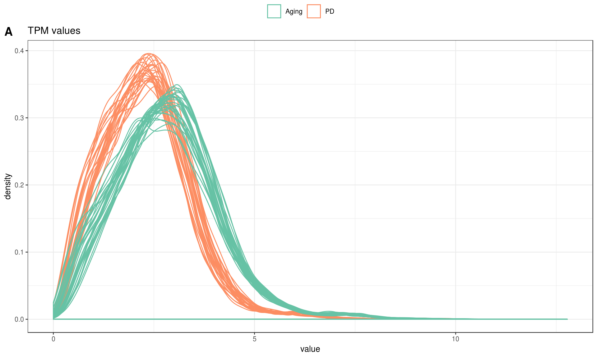
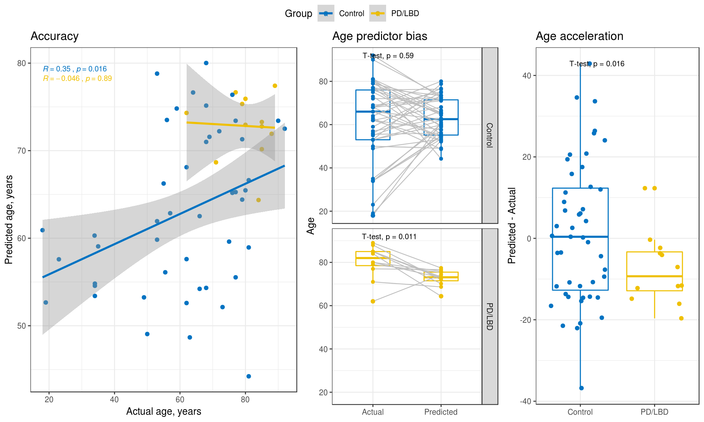

Appendix Age Acceleration, RNAseq
Parameters
## {
## "host": "DL560",
## "nPerm": 40,
## "workers": 41,
## "outliers": {
## "thresholdSD": 3,
## "noOfPCs": 2,
## "removeOutliers": true,
## "shape": "Diagnosis"
## },
## "clustering": {
## "groups": ["Diagnosis", "Sex", "Cohort", "substr(Sample_ID, 1, 1)", "RIN < median(RIN)"],
## "addClustersToModel": 0
## },
## "normalization": {
## "normalize": true,
## "plotColor": "Cohort"
## },
## "imputation": {
## "imputeBetas": false,
## "imputeCounts": false
## },
## "model": {
## "formula": "~ 0 + Diagnosis + Diagnosis:Age + Cohort + Sex + PMI + RIN",
## "formula0": "~ 0 + Diagnosis + Age + Cohort + Sex + PMI + RIN",
## "contrasts": ["DiagnosisControl.Age", "DiagnosisPD.LBD.Age", "DiagnosisControl.Age - DiagnosisPD.LBD.Age"],
## "svRange": [1, 2, 3, 4, 5, 6],
## "bacon": false
## }
## }Data
Analysis
Outlier identification
| ID | Sample_ID | Age | Sex | PMI | Diagnosis | RIN | Cohort |
|---|---|---|---|---|---|---|---|
| 16825 | E5 | 69 | M | 45 | Control | 8.6 | Aging |
| 17317 | F3 | 83 | M | 50 | Control | 8.4 | Aging |
Outliers have been removed.
[1] “untouched tables: genome”
Sample clustering
Hierarchical clustering using correlations as similarity measure and Ward linkage.
Normalization
Signal density before normalization

Signals after normalization
Covariates
Covariates used in subsequent models
## [1] "Diagnosis" "Age" "Sex" "Cohort" "RIN" "PMI"Are any of the covariates related to the variable of interest? (Assuming that the first variable in modelData is the one of interest).
##
## Call:
## glm(formula = formula, family = "binomial", data = data$modelData)
##
## Deviance Residuals:
## Min 1Q Median 3Q Max
## -1.70718 -0.43204 -0.00004 -0.00001 2.01237
##
## Coefficients:
## Estimate Std. Error z value Pr(>|z|)
## (Intercept) -2.916e+01 2.789e+03 -0.010 0.9917
## Age 1.005e-01 4.758e-02 2.112 0.0347 *
## SexF -3.288e-01 9.048e-01 -0.363 0.7163
## CohortPD 1.989e+01 2.789e+03 0.007 0.9943
## RIN 2.011e-01 6.548e-01 0.307 0.7588
## PMI 8.894e-03 3.708e-02 0.240 0.8105
## ---
## Signif. codes: 0 '***' 0.001 '**' 0.01 '*' 0.05 '.' 0.1 ' ' 1
##
## (Dispersion parameter for binomial family taken to be 1)
##
## Null deviance: 59.598 on 58 degrees of freedom
## Residual deviance: 31.814 on 53 degrees of freedom
## AIC: 43.814
##
## Number of Fisher Scoring iterations: 19Robust lmFit
rnaseq <- data$tpm
prefix <- "r1_"
modelparams <- list(
variabilityQuantile = 0.1,
voom = TRUE,
downloadDataMatrix = TRUE,
accelerationVariable = "Diagnosis"
)Filter least variable
Removed 1466 of 14660 least variable genes
Perform VOOM
## Voom performed on given counts## Relation of voom normalization factors to other covariates:##
## Call:
## lm(formula = dgelist$samples$norm.factors ~ ., data = data$modelData)
##
## Residuals:
## Min 1Q Median 3Q Max
## -0.025798 -0.008439 0.000033 0.007457 0.032646
##
## Coefficients:
## Estimate Std. Error t value Pr(>|t|)
## (Intercept) 9.616e-01 2.433e-02 39.523 <2e-16 ***
## DiagnosisPD/LBD 1.021e-02 4.836e-03 2.112 0.0395 *
## Age 8.509e-05 1.056e-04 0.806 0.4241
## SexF 1.774e-03 3.314e-03 0.535 0.5947
## CohortPD -1.478e-02 6.700e-03 -2.206 0.0318 *
## RIN 4.486e-03 2.757e-03 1.627 0.1098
## PMI 1.322e-04 9.839e-05 1.343 0.1850
## ---
## Signif. codes: 0 '***' 0.001 '**' 0.01 '*' 0.05 '.' 0.1 ' ' 1
##
## Residual standard error: 0.01232 on 52 degrees of freedom
## Multiple R-squared: 0.4715, Adjusted R-squared: 0.4106
## F-statistic: 7.733 on 6 and 52 DF, p-value: 5.742e-06Data download
Download data file.
Data PCs vs Covariates
Fit covariates to the PCs using limma
## Removing intercept from test coefficients| DiagnosisPD.LBD | Age | SexF | CohortPD | RIN | PMI | AveExpr | F | P.Value | adj.P.Val | |
|---|---|---|---|---|---|---|---|---|---|---|
| PC1 | 6.4166500 | -0.0053520 | 3.0518827 | 138.0889958 | 5.8855541 | 0.1913240 | 0 | 128.3468540 | 0.0000000 | 0.0000000 |
| PC2 | 1.2652881 | 0.3452553 | 0.9830078 | 9.9133992 | 15.1595630 | -0.0209207 | 0 | 2.6195102 | 0.0260729 | 0.1303645 |
| PC3 | 3.0765472 | -0.1207766 | 2.3024878 | -6.7958383 | -6.1926259 | 0.4089299 | 0 | 2.1841049 | 0.0579024 | 0.1765443 |
| PC9 | -2.6241620 | -0.1108625 | 4.7544810 | 6.5426052 | 0.8901767 | 0.0980936 | 0 | 2.0747813 | 0.0706177 | 0.1765443 |
| PC6 | 3.4502531 | -0.0607058 | -0.1524850 | 10.0500100 | 7.2997326 | 0.0177348 | 0 | 1.8562972 | 0.1045924 | 0.2091848 |
| PC4 | 13.9945784 | -0.1001304 | 0.1129709 | 4.8529845 | 5.2538124 | 0.0519339 | 0 | 1.7124473 | 0.1349261 | 0.2248769 |
| PC7 | 0.8374712 | -0.0589645 | 2.6400257 | -1.2592538 | 1.9765847 | -0.1642789 | 0 | 1.1708255 | 0.3349158 | 0.4301714 |
| PC8 | 6.5903930 | -0.0488404 | -2.1439320 | -0.3696957 | -0.0669263 | 0.1059493 | 0 | 1.1535051 | 0.3441371 | 0.4301714 |
| PC10 | 3.1845864 | 0.0109486 | 1.4991206 | 6.0372126 | 3.0516839 | 0.0808577 | 0 | 1.0080778 | 0.4293603 | 0.4770669 |
| PC5 | 0.8408250 | -0.1925380 | -2.3522362 | 5.6447812 | 0.5930309 | 0.0556940 | 0 | 0.7845467 | 0.5856562 | 0.5856562 |
The covariates significantly affecting the PCs using ANOVA:
Select the number of SVs
All known covariates are regressed from data and PCA of residuals is computed. The number of PCs that explain more than 5% of variability is used as the desired number of SVs.
## Selected number of SVs 2Probe-level models
P value distribution
Volcano plot
Download fits
GSEA
Age acceleration
An age predictor is trained and evaluated using 10 fold cross-validation on all the samples. Random forest is used as training algorithm.

SessionInfo
## R version 3.5.1 (2018-07-02)
## Platform: x86_64-pc-linux-gnu (64-bit)
## Running under: CentOS Linux 7 (Core)
##
## Matrix products: default
## BLAS/LAPACK: /opt/intel/compilers_and_libraries_2018.2.199/linux/mkl/lib/intel64_lin/libmkl_rt.so
##
## locale:
## [1] LC_CTYPE=C LC_NUMERIC=C
## [3] LC_TIME=en_US.UTF-8 LC_COLLATE=en_US.UTF-8
## [5] LC_MONETARY=en_US.UTF-8 LC_MESSAGES=en_US.UTF-8
## [7] LC_PAPER=en_US.UTF-8 LC_NAME=C
## [9] LC_ADDRESS=C LC_TELEPHONE=C
## [11] LC_MEASUREMENT=en_US.UTF-8 LC_IDENTIFICATION=C
##
## attached base packages:
## [1] parallel stats graphics grDevices utils datasets methods
## [8] base
##
## other attached packages:
## [1] bindrcpp_0.2.2 ggsci_2.9 randomForest_4.6-14
## [4] caret_6.0-81 lattice_0.20-38 edgeR_3.24.3
## [7] doSNOW_1.0.16 snow_0.4-3 itertools_0.1-3
## [10] iterators_1.0.10 limma_3.38.3 impute_1.56.0
## [13] WGCNA_1.66 fastcluster_1.1.25 dynamicTreeCut_1.63-1
## [16] glue_1.3.0 foreach_1.4.4 ggpubr_0.2
## [19] magrittr_1.5 plotly_4.8.0 ggplot2_3.1.0
## [22] dplyr_0.7.8 data.table_1.12.0 kableExtra_1.0.1
## [25] knitr_1.21 pacman_0.5.0 shiny_1.2.0
##
## loaded via a namespace (and not attached):
## [1] colorspace_1.4-0 class_7.3-15 htmlTable_1.13.1
## [4] base64enc_0.1-3 rstudioapi_0.9.0 ggrepel_0.8.0
## [7] bit64_0.9-7 lubridate_1.7.4 prodlim_2018.04.18
## [10] AnnotationDbi_1.44.0 mvtnorm_1.0-8 xml2_1.2.0
## [13] codetools_0.2-16 splines_3.5.1 doParallel_1.0.14
## [16] robustbase_0.93-3 Formula_1.2-3 jsonlite_1.6
## [19] cluster_2.0.7-1 GO.db_3.7.0 rrcov_1.4-7
## [22] readr_1.3.1 compiler_3.5.1 httr_1.4.0
## [25] backports_1.1.3 assertthat_0.2.0 Matrix_1.2-15
## [28] lazyeval_0.2.1 later_0.7.5 acepack_1.4.1
## [31] htmltools_0.3.6 tools_3.5.1 gtable_0.2.0
## [34] reshape2_1.4.3 Rcpp_1.0.0 Biobase_2.42.0
## [37] nlme_3.1-137 preprocessCore_1.44.0 timeDate_3043.102
## [40] gower_0.1.2 xfun_0.4 stringr_1.3.1
## [43] rvest_0.3.2 mime_0.6 DEoptimR_1.0-8
## [46] MASS_7.3-51.1 scales_1.0.0 ipred_0.9-8
## [49] hms_0.4.2 promises_1.0.1 RColorBrewer_1.1-2
## [52] yaml_2.2.0 memoise_1.1.0 gridExtra_2.3
## [55] rpart_4.1-13 latticeExtra_0.6-28 stringi_1.2.4
## [58] RSQLite_2.1.1 highr_0.7 S4Vectors_0.20.1
## [61] pcaPP_1.9-73 checkmate_1.9.1 BiocGenerics_0.28.0
## [64] lava_1.6.5 rlang_0.3.1 pkgconfig_2.0.2
## [67] matrixStats_0.54.0 evaluate_0.12 purrr_0.3.0
## [70] bindr_0.1.1 recipes_0.1.4 htmlwidgets_1.3
## [73] labeling_0.3 cowplot_0.9.4 bit_1.1-14
## [76] tidyselect_0.2.5 robust_0.4-18 plyr_1.8.4
## [79] R6_2.3.0 generics_0.0.2 IRanges_2.16.0
## [82] Hmisc_4.2-0 fit.models_0.5-14 DBI_1.0.0
## [85] pillar_1.3.1 foreign_0.8-71 withr_2.1.2
## [88] survival_2.43-3 nnet_7.3-12 tibble_2.0.1
## [91] crayon_1.3.4 rmarkdown_1.11 locfit_1.5-9.1
## [94] grid_3.5.1 blob_1.1.1 ModelMetrics_1.2.2
## [97] digest_0.6.18 webshot_0.5.1 xtable_1.8-3
## [100] tidyr_0.8.2 httpuv_1.4.5.1 stats4_3.5.1
## [103] munsell_0.5.0 viridisLite_0.3.0